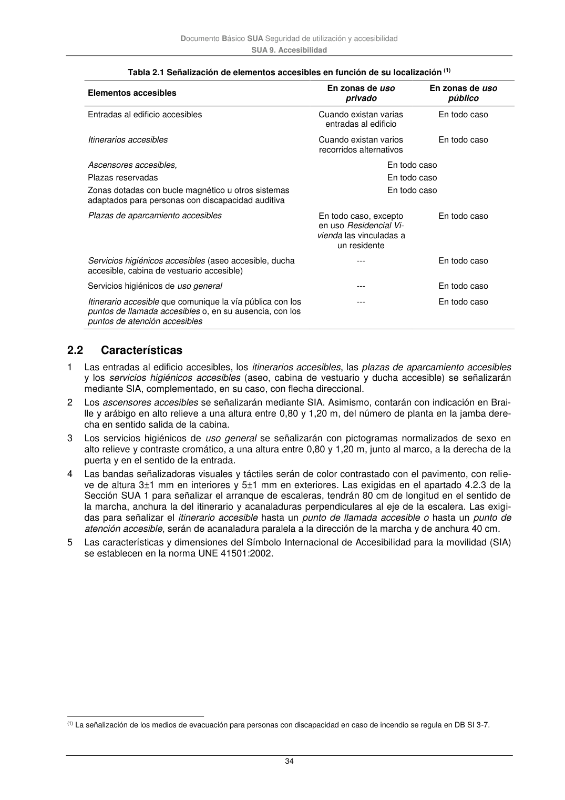

DB-SUA Seguridad de utilización y accesibilidad · edición 2022-06-14 · capa oficial
Documento DB-SUA-oficial · SHA-256 del PDF 3cfb5bbb135e8f02faebd8b844e03e8947994c18d4c9e675a7d2aa37d1cd5958
Copia fiel del PDF fuente · Fuente oficial
Ficha de la disposición en la fuente oficial
Formatos: JSON del segmento · Markdown
Dotación 1 Con el fin de facilitar el acceso y la utilización independiente, no discriminatoria y segura de los edifi- cios, se señalizarán los elementos que se indican en la tabla 2.1, con las características indicadas en el apartado 2.2 siguiente, en función de la zona en la que se encuentren. Documento Básico SUA Seguridad de utilización y accesibilidad SUA 9. Accesibilidad 34 Tabla 2.1 Señalización de elementos accesibles en función de su localización (1) Elementos accesibles En zonas de uso privado En zonas de uso público Entradas al edificio accesibles Cuando existan varias entradas al edificio En todo caso Itinerarios accesibles Cuando existan varios recorridos alternativos En todo caso Ascensores accesibles, Plazas reservadas Zonas dotadas con bucle magnético u otros sistemas adaptados para personas con discapacidad auditiva En todo caso En todo caso En todo caso Plazas de aparcamiento accesibles En todo caso, excepto en uso Residencial Vi- vienda las vinculadas a un residente En todo caso Servicios higiénicos accesibles (aseo accesible, ducha accesible, cabina de vestuario accesible) --- En todo caso Servicios higiénicos de uso general --- En todo caso Itinerario accesible que comunique la vía pública con los puntos de llamada accesibles o, en su ausencia, con los puntos de atención accesibles --- En todo caso 2.2
